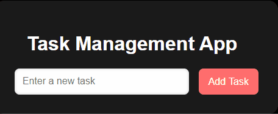
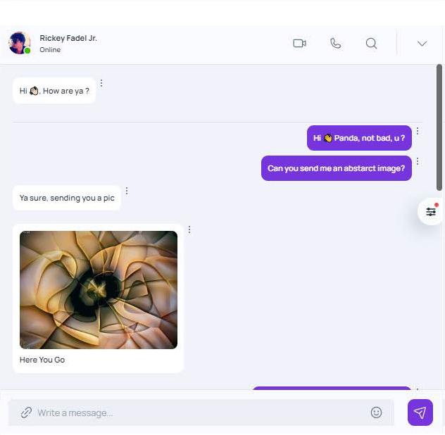
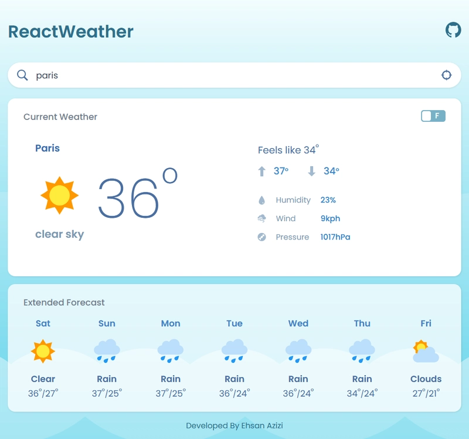

🚀 TypeScript Projects Showcase
Check out some cool TypeScript projects with real code and demos to level up your TS skills.
  
🔥 Top 5 TypeScript GitHub Repos
TypeScript (Official Repo)
— The language itself, straight from Microsoft.
Next.js
— React framework with full TypeScript support and SSR.
Deno
— Modern secure runtime for JavaScript and TypeScript.
MUI (Material UI)
— Popular React UI framework built with TypeScript.
class-validator
— Validation library for TypeScript classes.